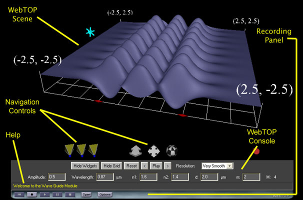
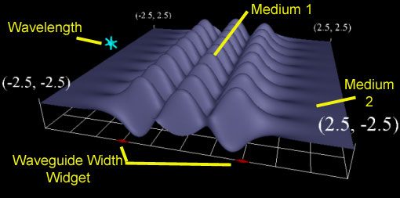
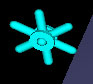
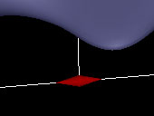
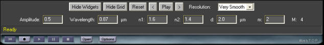

Planar Waveguide: Directions
Under normal operation, your WebTOP window should look like the following:

The WebTOP window has four parts. The top portion is the active WebTOP scene.
The second portion is the VRML Navigation controls.
The third portion, the console, contains a message line that provides help on the operation of the Widgets and keyboard entry boxes.
The fourth portion is the recording panel that allows you to record and replay WebTOP sessions. You may scroll down to read on, or
select the appropriate link from the following items:
How To Change Parameters
When you start the module, you should see a figure similar to this:

The parameters that you can change are the amplitude, the wavelength, the indices of refraction, n1, n2, the mode of observation, and the width of the waveguide. These parameters can be changed by manipulating the provided widgets and by using the WebTOP console. The console also allows you to hide/show the widgets and the Grid. You may view the animation in Static mode (the default) and use the forward '>' and backward '<' buttons to step forward or backward in time or Animation mode.
Module Widgets:
This module includes two types of widgets, for the waveguide width, d, and for the wavelength:
|  |
 |
| Wavelength Widget |
Width Widget |
To change a parameter, you need to position your cursor over the proper
widget. Labels on the widget figures, shown above, identify each of the widgets. Once you have placed the cursor over the widget, the cursor changes shape.
If you click on the left mouse button, a message explaining the operation
of the widget appears at the help portion of the module console. We advise that you manipulate the widgets while the module is in static mode.
Selecting a Widget:
Position the cursor over a widget for activation.
Changing the Wavelength:
Turn the cursor clockwise to increase the wavelength and counter-clockwise to decrease it.
Changing the Waveguide Width:
Drag the cursor to the right to increase the amplitude and to the left to decrease it.
Using the WebTOP Console:
Use the WebTOP console to change other parameters and to control the scene. You may change the parameters by typing the values in the "Input Boxes". You need to press the enter key after you change each of the parameters. As shown in the following Figure, the parameters input boxes are available at the bottom of the control panel just above the context sensitive help. Note that the panel is context sensitive; the parameters shown are those corresponding to the last parameters changes. The parameter, M, for the total number of modes changes automatically as other parameters are changed and cannot be manipulated by the user.
 |
Waveguide Module Console |
|